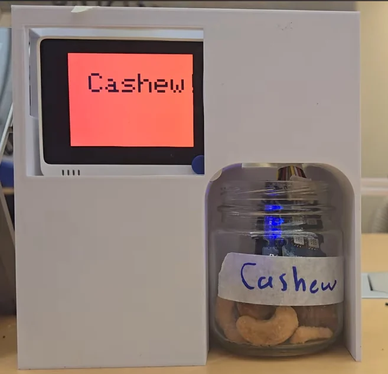

Sensors & embedded systems
Allergen Detector Prototype



I built an Arduino prototype to explore whether low-cost gas sensors could distinguish foods from their volatile compounds. I collected sample readings and displayed predictions on a screen in a 3D-printed enclosure.
Research into direct allergen detection led me to focus the prototype on classifying food samples.